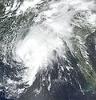
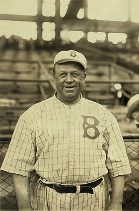

Not logged in Talk Contributions Create Account Log in
- Main Page
- Talk
- Read
- View source
- View history
- Arts
- Biography
- Geography
- History
- Mathematics
- Science
- Society
- Technology
- All portals
- ... that larvae of the red-headed pine sawfly (pictured) are gregarious, and when they have defoliated a tree, move as a group to a neighbouring one?
- ... that American trade unionist George Baldanzi worked out of Greensboro, North Carolina, as part of Operation Dixie because it was close to many textile plants?
- ... that sopa de fideo, a soup in Mexican and Tex-Mex cuisine, may have originated in Spain?
- ... that Us Conductors, the debut novel by Sean Michaels depicting a fictionalized account of the relationship between Léon Theremin and Clara Rockmore, won the 2014 Scotiabank Giller Prize?
- ... that Desideria Quintanar de Yáñez was reportedly inspired by a dream to join The Church of Jesus Christ of Latter-day Saints in 1880 in Mexico?
- ... that under Operation Temperer, thousands of British Army troops can be deployed to support police in guarding key sites in the UK against terrorist threats?
- .. that Al Densmore was 24 years old when he took his seat in the Oregon House of Representatives, and just four years later his House peers elected him speaker pro tempore?
- ... that ArsenalFanTV was designed to give football supporters a chance to have their opinions heard?
- In sailing, the America's Cup concludes with Team New Zealand defeating Oracle Team USA.
- An oil truck explosion in Ahmedpur East, Pakistan, kills at least 150 people and injures more than 100 others.
- The World Health Organization estimates that 200,000 people in Yemen have been infected with cholera.
- At least 10 people are killed and more than 90 others are missing following a landslide in Sichuan, China.
- In Pakistan, at least 80 people are killed and more than 200 others are injured in multiple bombings in Quetta and Parachinar
- The cricket teams of Ireland and Afghanistan are awarded Test status by the ICC.
- 1444 – In their rebellion against the Ottoman Empire, Albanians led by Skanderbeg routed the Ottoman forces in the Battle of Torvioll.
- 1613 – The original Globe Theatre in London burned to the ground after a cannon employed for special effects misfired during a performance of William Shakespeare's Henry VIII and ignited the theatre's roof.
- 1914 – During the second day of the anti-Serb riots in Sarajevo, numerous buildings owned by ethnic Serbs were vandalized and looted.
- 1967 – Actress Jayne Mansfield (pictured), her boyfriend Sam Brody, and their driver were killed in a car accident outside of New Orleans, while her children Miklós, Zoltán, and Mariska Hargitay escaped with only minor injuries.
- 2007 – Apple Inc. released the first generation iPhone, which revolutionized the smartphone industry and made the company one of the world's most valuable publicly traded companies.
- Community portal – Bulletin board, projects, resources and activities covering a wide range of Wikipedia areas.
- Help desk – Ask questions about using Wikipedia.
- Local embassy – For Wikipedia-related communication in languages other than English.
- Reference desk – Serving as virtual librarians, Wikipedia volunteers tackle your questions on a wide range of subjects.
- Site news – Announcements, updates, articles and press releases on Wikipedia and the Wikimedia Foundation.
- Village pump – For discussions about Wikipedia itself, including areas for technical issues and policies.
- More than 1,000,000 articles: Deutsch Español Français Italiano Nederlands 日本語 Polski Русский Svenska Tiếng Việt
- More than 250,000 articles: العربية Bahasa Indonesia Bahasa Melayu Català Čeština Euskara فارسی 한국어 Magyar Norsk bokmål Português Română Srpski Srpskohrvatski Suomi Türkçe Українська 中文
- More than 50,000 articles: Bosanski Български Dansk Eesti Ελληνικά English (simple form) Esperanto Galego עברית Hrvatski Latviešu Lietuvių Norsk nynorsk Slovenčina Slovenščina ไทย
Welcome to Wikipedia,
the free encyclopedia that anyone can edit.
5,432,839 articles in English
From today's featured article
Tropical Storm Bill hit the Gulf Coast of the United States in the summer of 2003. The second storm of that Atlantic hurricane season, Bill developed from a tropical wave on June 29 to the north of the Yucatán Peninsula. It slowly organized as it moved northward, and reached a peak of 60 mph (95 km/h) shortly before making landfall in south-central Louisiana. It produced a moderate storm surge, causing tidal flooding. In Montegut in the southeastern portion of the state, a levee was breached, flooding many homes, and in Florida, two swimmers drowned. As Bill accelerated to the northeast, moisture from the storm, combined with cold air from an approaching cold front, produced an outbreak of 34 tornadoes. Moderate winds and wet soil combined to topple trees onto houses and power lines, leaving hundreds of thousands without electric power. By the time Bill became extratropical on July 2, it was responsible for four deaths and around $50 million in damage. (Full article...)
Part of the 2003 Atlantic hurricane season series, one of Wikipedia's featured topics.
Recently featured: White-naped xenopsaris The Well of Loneliness Japanese aircraft carrier Jun'yō Archive By email More featured articles...
Did you know...
Recent additions Start a new article Nominate an article
In the news
Ongoing
Recent deaths: Michael Bond Gordon Wilson Maria Mutagamba Gabe Pressman
On this day...

June 29
Óláfr Guðrøðarson (d. 1153) · Thomas Dunn English (b. 1819) · Elisabet Ney (d. 1907)
More anniversaries: June 28 June 29 June 30
Archive By email List of historical anniversaries
Today's featured picture
Wilbert Robinson (1863–1934) was an American catcher, coach and manager in Major League Baseball. Robinson made it to the major leagues in 1886 with the Philadelphia Athletics of the American Association, transferring to the Baltimore Orioles in 1890. After the Orioles, by then playing in the National League, folded in 1899, he played one season with the St. Louis Cardinals before spending his final season with a new Baltimore Orioles team in the American League. (That team later moved to New York. The present Baltimore Orioles are yet another team.) Robinson played 1,316 games as a catcher, compiled a career batting average of .273, and was inducted into the Baseball Hall of Fame in 1945. He is shown here in 1916 as the manager of the Brooklyn Robins or Dodgers (now the Los Angeles Dodgers).
Recently featured: Boötes Rusty-naped pitta The Roses of Heliogabalus Archive More featured pictures...
Other areas of Wikipedia
Wikipedia's sister projects
Wikipedia is hosted by the Wikimedia Foundation, a non-profit organization that also hosts a range of other projects:
Commons Commons Free media repository MediaWiki MediaWiki Wiki software development Meta-Wiki Meta-Wiki Wikimedia project coordination Wikibooks Wikibooks Free textbooks and manuals Wikidata Wikidata Free knowledge base Wikinews Wikinews Free-content news Wikiquote Wikiquote Collection of quotations Wikisource Wikisource Free-content library Wikispecies Wikispecies Directory of species Wikiversity Wikiversity Free learning materials and activities Wikivoyage Wikivoyage Free travel guide Wiktionary Wiktionary Dictionary and thesaurus
Wikipedia languages
This Wikipedia is written in English. Started in 2001, it currently contains 5,432,935 articles. Many other Wikipedias are available; some of the largest are listed below.
Complete list of Wikipedias
Text is available under the Creative Commons Attribution-ShareAlike License; additional terms may apply. By using this site, you agree to the Terms of Use and Privacy Policy. Wikipedia® is a registered trademark of the Wikimedia Foundation, Inc., a non-profit organization.
Privacy policyAbout WikipediaDisclaimersContact WikipediaDevelopersCookie statementMobile view